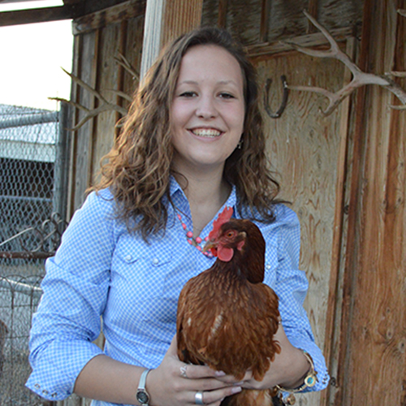

About Kacie

My name is Kacie Jones, I am a senior at Spanish Fork High School and will be graduating the spring of 2018. I have a strong passion for agriculture and my number one goal is to have a positive impact on the industry. I live on a farm just west of Spanish Fork, Utah, where I am responsible for a small herd of goats, several show pigs, and a half-acre garden. These projects are part of my Supervised Agricultural Experience, my project as an FFA member. Throughout the years I have seen the impact technology has on the agricultural industry, and in my future I hope to connect the two industries to not only make agriculture more successful, but also to help make it easier for the older generation to continue their productions.
Beginning in the Fall of 2018 I will pursue a degree in computer science at Southern Utah University. Following the completion of my degree I plan to find a career in software development or web development.